We use Python 3 in this tutorial, but provide minimal guidelines for Python 2.
Terminologies
| English | 한국어 | Description |
|---|---|---|
| Document | 문서 | - |
| Corpus | 말뭉치 | A set of documents |
| Token | 토큰 | Meaningful elements in a text such as words or phrases or symbols |
| Morphemes | 형태소 | Smallest meaningful unit in a language |
| POS | 품사 | Part-of-speech (ex: Nouns) |
| Classification | 분류 | A supervised learning task where $X$ and $y$ are given and $y$ is a set of discrete classes |
| Clustering | 군집화 | An unsupervised learning task where $X$ is given |
Text analysis process
- Load text
- Tokenize text (ex: stemming, morph analyzing)
- Tag tokens (ex: POS, NER)
- Token(Feature) selection and/or filter/rank tokens (ex: stopword removal, TF-IDF)
- ...and so on (ex: calculate word/document similarities, cluster documents)
Python Packages for Text Mining and NLP
...that we use in this tutorial.
-
NLTK: Provides modules for text analysis (mostly language independent)
pip install nltk
-
nltk.download('gutenberg') nltk.download('maxent_treebank_pos_tagger')
- Document classification
-
-
KoNLPy: Provides modules for Korean text analysis
pip install konlpy
- Text corpora
- Word POS classification
- Hannanum
- Kkma
- Mecab
- Komoran
-
Gensim: Provides modules for topic modeling and calculating similarities among documents
pip install -U gensim
- Topic modeling
- Word embedding
-
Twython: Provides easy access to Twitter API
pip install twython
- Example: Getting "Samsung (삼성)" related tweets
from twython import Twython import settings as s # Create a file named settings.py, and put oauth KEY values inside twitter = Twython(s.APP_KEY, s.APP_SECRET, s.OAUTH_TOKEN, s.OAUTH_TOKEN_SECRET) tweets = twitter.search(q='삼성', count=100) data = [(t['user']['screen_name'], t['text'], t['created_at']) for t in tweets['statuses']]
- Example: Getting "Samsung (삼성)" related tweets
Text exploration
1. Read document
As example documents, we select
Jane Austen's Emma for English,
and Korea National Assembly's bill number 1809890 for Korean.
Otherwise, you can use a document of your own with open('some_file.txt').read().
-
English
from nltk.corpus import gutenberg # Docs from project gutenberg.org files_en = gutenberg.fileids() # Get file ids doc_en = gutenberg.open('austen-emma.txt').read()
-
Korean
from konlpy.corpus import kobill # Docs from pokr.kr/bill files_ko = kobill.fileids() # Get file ids doc_ko = kobill.open('1809890.txt').read()
2. Tokenize
There are numerous ways to tokenize a document.
Here, we use nltk.regexp_tokenize for English,
konlpy.tag.Twitter.morph for Korean text.
-
English
from nltk import regexp_tokenize pattern = r'''(?x) ([A-Z]\.)+ | \w+(-\w+)* | \$?\d+(\.\d+)?%? | \.\.\. | [][.,;"'?():-_`]''' tokens_en = regexp_tokenize(doc_en, pattern)
-
Korean
from konlpy.tag import Twitter; t = Twitter() tokens_ko = t.morphs(doc_ko)
3. Load tokens with nltk.Text()
-
English
import nltk en = nltk.Text(tokens_en)
-
Korean
import nltk ko = nltk.Text(tokens_ko, name='대한민국 국회 의안 제 1809890호') # For Python 2, input `name` as u'유니코드'
nltk.Text() is a convenient way to explore a current document.
For Python 2, name has to be input as u'유니코드'.
If you are using Python 2, use u'유니코드' for input of all following Korean text.
-
Tokens
-
English
print(len(en.tokens)) # returns number of tokens (document length) print(len(set(en.tokens))) # returns number of unique tokens en.vocab() # returns frequency distribution
191061 7927 FreqDist({',': 12018, '.': 8853, 'to': 5127, 'the': 4844, 'and': 4653, 'of': 4278, '"': 4187, 'I': 3177, 'a': 3000, 'was': 2385, ...}) -
Korean
print(len(ko.tokens)) # returns number of tokens (document length) print(len(set(ko.tokens))) # returns number of unique tokens ko.vocab() # returns frequency distribution
1707 476 FreqDist({'.': 61, '의': 46, '육아휴직': 38, '을': 34, '(': 27, ',': 26, '이': 26, ')': 26, '에': 24, '자': 24, ...})
-
-
Plot frequency distributions
-
English
en.plot(50) # Plot sorted frequency of top 50 tokens

-
Korean
ko.plot(50) # Plot sorted frequency of top 50 tokens
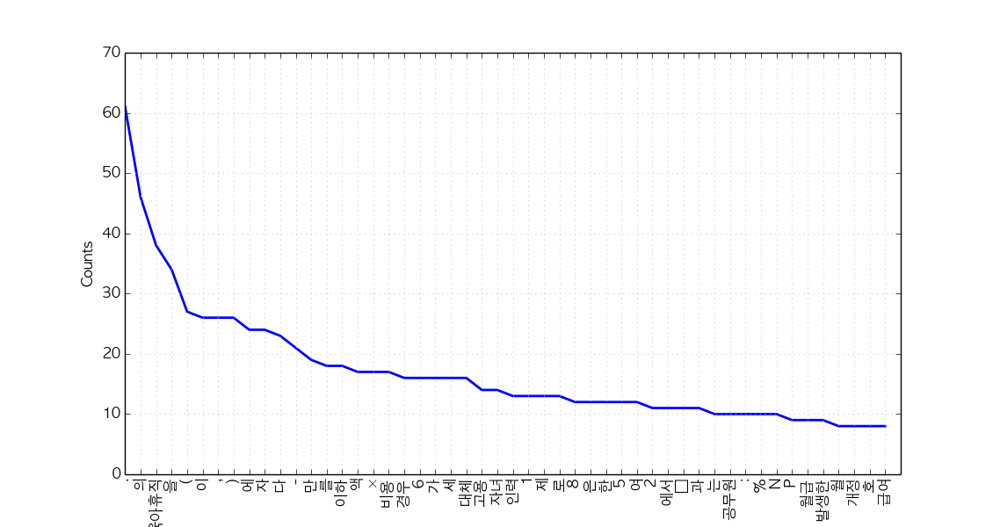
Tip: To save a plot programmably, and not through the GUI, overwrite
pylab.showwithpylab.savefigbefore drawing the plot (reference):from matplotlib import pylab pylab.show = lambda: pylab.savefig('some_filename.png')Troubleshooting: For those who see rectangles instead of letters in the saved plot file, include the following configurations before drawing the plot:
from matplotlib import font_manager, rc font_fname = 'c:/windows/fonts/gulim.ttc' # A font of your choice font_name = font_manager.FontProperties(fname=font_fname).get_name() rc('font', family=font_name)Some example fonts:
- Mac OS:
/Library/Fonts/AppleGothic.ttf
-
-
Count
-
English
en.count('Emma') # Counts occurrences
865
-
Korean
ko.count('초등학교') # Counts occurrences
6
-
-
Dispersion plot
-
English
en.dispersion_plot(['Emma', 'Frank', 'Jane'])

-
Korean
ko.dispersion_plot(['육아휴직', '초등학교', '공무원'])

-
-
Concordance
-
English
en.concordance('Emma', lines=5)
Displaying 5 of 865 matches: Emma by Jane Austen 1816 ] VOLUME I CHAPT Emma Woodhouse , handsome , clever , and both daughters , but particularly of Emma . Between them it was more the int friend very mutually attached , and Emma doing just what she liked ; highly e r own . The real evils , indeed , of Emma ' s situation were the power of havi -
Korean (or, use konlpy.utils.concordance)
ko.concordance('초등학교')
Displaying 6 of 6 matches: ․ 김정훈 김학송 의원 ( 10 인 ) 제안 이유 및 주요 내용 초등학교 저학년 의 경우 에도 부모 의 따뜻한 사랑 과 보살핌 이 필요 한 을 할 수 있는 자녀 의 나이 는 만 6 세 이하 로 되어 있어 초등학교 저학년 인 자녀 를 돌보기 위해서 는 해당 부모님 은 일자리 를 다 . 제 63 조제 2 항제 4 호 중 “ 만 6 세 이하 의 초등학교 취학 전 자녀 를 ” 을 “ 만 8 세 이하 ( 취학 중인 경우 전 자녀 를 ” 을 “ 만 8 세 이하 ( 취학 중인 경우 에는 초등학교 2 학년 이하 를 말한 다 ) 의 자녀 를 ” 로 한 다 . 부 . ∼ 3 . ( 현행 과 같 음 ) 4 . 만 6 세 이하 의 초등학교 취 4 . 만 8 세 이하 ( 취학 중인 경우 학 전 자녀 를 양 세 이하 ( 취학 중인 경우 학 전 자녀 를 양육 하기 위하 에는 초등학교 2 학년 이하 를 여 필요하거 나 여자 공무원 이 말한 다 ) 의
-
-
Find similar words
-
English
en.similar('Emma') en.similar('Frank')
she it he i harriet you her jane him that me and all they them there herself was hartfield be mr mrs emma harriet you it her she he him hartfield them jane that isabella all herself look i me
-
Korean
ko.similar('자녀') ko.similar('육아휴직')
논의 None
-
-
Collocations
-
English
en.collocations()
Frank Churchill; Miss Woodhouse; Miss Bates; Jane Fairfax; Miss Fairfax; every thing; young man; every body; great deal; dare say; John Knightley; Maple Grove; Miss Smith; Miss Taylor; Robert Martin; Colonel Campbell; Box Hill; said Emma; Harriet Smith; William Larkins
-
Korean
en.collocations()
초등학교 저학년; 육아휴직 대상
-
For more information on nltk.Text(), see the source code or API.
Tagging and chunking
Until now, we used delimited text, namely tokens, to explore our sample document. Now let's classify words into given classes, namely part-of-speech tags, and chunk text into larger pieces.
1. POS tagging
There are numerous ways of tagging a text. Among them, the most frequently used, and developed way of tagging is arguably POS tagging.
Since one document is too long to observe a parsed structure, lets use one short sentence for each language.
-
English
tokens = "The little yellow dog barked at the Persian cat".split() tags_en = nltk.pos_tag(tokens)
[('The', 'DT'), ('little', 'JJ'), ('yellow', 'NN'), ('dog', 'NN'), ('barked', 'VBD'), ('at', 'IN'), ('the', 'DT'), ('Persian', 'NNP'), ('cat', 'NN')]- It is also possible to use the famous Stanford POS tagger with NLTK, with
from nltk.tag.stanford import POSTagger
- It is also possible to use the famous Stanford POS tagger with NLTK, with
-
Korean
from konlpy.tag import Twitter; t = Twitter() tags_ko = t.pos("작고 노란 강아지가 페르시안 고양이에게 짖었다")
[('작고', 'Noun'), ('노란', 'Adjective'), ('강아지', 'Noun'), ('가', 'Josa'), ('페르시안', 'Noun'), ('고양이', 'Noun'), ('에게', 'Josa'), ('짖었', 'Noun'), ('다', 'Josa')]
2. Noun phrase chunking
nltk.RegexpParser() is a great way to start chunking.
-
English
parser_en = nltk.RegexpParser("NP: {<DT>?<JJ>?<NN.*>*}") chunks_en = parser_en.parse(tags_en) chunks_en.draw()
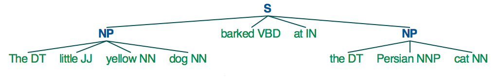
-
Korean
parser_ko = nltk.RegexpParser("NP: {<Adjective>*<Noun>*}") chunks_ko = parser_ko.parse(tags_ko) chunks_ko.draw()

For more information on chunking, refer to Extracting Information from Text for English, and Chunking for Korean.
Topic modeling
- Topic modeling in a nutshell

-
History
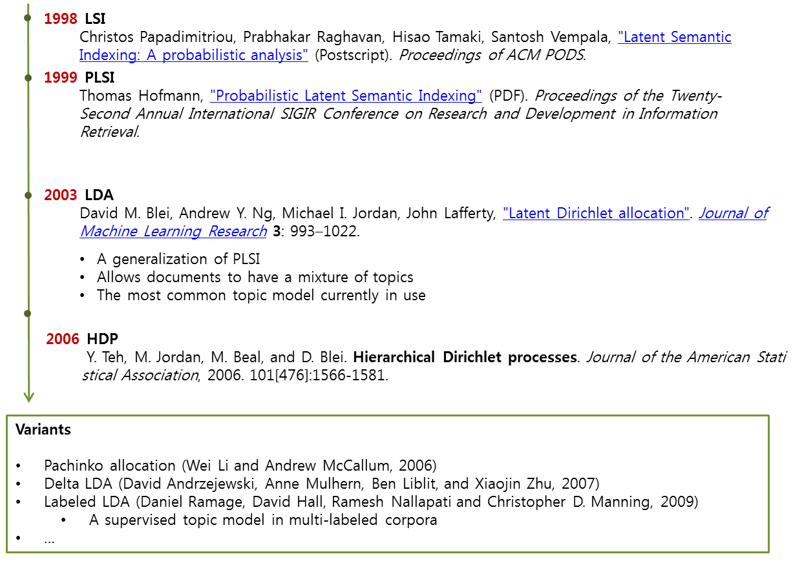- LSI: Learns latent topics by performing a matrix decomposition (SVD) on the term-document matrix
- LDA: A generative probabilistic model, that assumes a Dirichelt prior over the latent topics
- HDP: A natural nonparametric generalization of LDA, where the number of topics can be unbounded ant learnt from data
1. Preprocessing
-
Load documents
-
English
from nltk.corpus import reuters docs_en = [reuters.words(i) for i in reuters.fileids()]
-
Korean
from konlpy.corpus import kobill docs_ko = [kobill.open(i).read() for i in kobill.fileids()]
-
-
Tokenize
-
English
texts_en = docs_en # because we loaded tokenized documents in step 1 print(texts_en[0])
['ASIAN', 'EXPORTERS', 'FEAR', 'DAMAGE', 'FROM', 'U', ...]
-
Korean
from konlpy.tag import Twitter; t = Twitter() pos = lambda d: ['/'.join(p) for p in t.pos(d, stem=True, norm=True)] texts_ko = [pos(doc) for doc in docs_ko] print(texts_ko[0])
['지방공무원법/Noun', '일부/Noun', '개정/Noun', '법률/Noun', '안/Noun', '(/Punctuation', '정의화/Noun', '의원/Noun', ...]
-
-
Encode tokens to integers
-
English
from gensim import corpora dictionary_en = corpora.Dictionary(texts_en) dictionary_en.save('en.dict') # save dictionary to file for future use
-
Korean
from gensim import corpora dictionary_ko = corpora.Dictionary(texts_ko) dictionary_ko.save('ko.dict') # save dictionary to file for future use
-
-
Calculate TF-IDF
-
English
from gensim import models tf_en = [dictionary_en.doc2bow(text) for text in texts_en] tfidf_model_en = models.TfidfModel(tf_en) tfidf_en = tfidf_model_en[tf_en] corpora.MmCorpus.serialize('en.mm', tfidf_en) # save corpus to file for future use # print first 10 elements of first document's tf-idf vector print(tfidf_en.corpus[0][:10]) # print top 10 elements of first document's tf-idf vector print(sorted(tfidf_en.corpus[0], key=lambda x: x[1], reverse=True)[:10]) # print token of most frequent element print(dictionary_en.get(9))
[(0, 7), (1, 3), (2, 13), (3, 2), (4, 1), (5, 1), (6, 20), (7, 6), (8, 10), (9, 62)] [(9, 62), (363, 32), (276, 30), (371, 26), (6, 20), (96, 19), (112, 19), (326, 16), (118, 14), (2, 13)] '.'
-
Korean
from gensim import models tf_ko = [dictionary_ko.doc2bow(text) for text in texts_ko] tfidf_model_ko = models.TfidfModel(tf_ko) tfidf_ko = tfidf_model_ko[tf_ko] corpora.MmCorpus.serialize('ko.mm', tfidf_ko) # save corpus to file for future use # print first 10 elements of first document's tf-idf vector print(tfidf_ko.corpus[0][:10]) # print top 10 elements of first document's tf-idf vector print(sorted(tfidf_ko.corpus[0], key=lambda x: x[1], reverse=True)[:10]) # print token of most frequent element print(dictionary_ko.get(414))
[(0, 10), (1, 27), (2, 1), (3, 26), (4, 3), (5, 26), (6, 4), (7, 2), (8, 1), (9, 1)] [(414, 71), (14, 61), (309, 38), (314, 38), (313, 28), (1, 27), (3, 26), (5, 26), (353, 22), (13, 21)] '하다/Verb'
-
2. Train topic models
-
LSI
-
English
ntopics, nwords = 3, 5 lsi_en = models.lsimodel.LsiModel(tfidf_en, id2word=dictionary_en, num_topics=ntopics) print(lsi_en.print_topics(num_topics=ntopics, num_words=nwords))
['0.509*"vs" + 0.272*"000" + 0.258*"cts" + 0.243*"loss" + 0.238*"mln"', '-0.294*"the" + 0.237*"vs" + -0.176*"to" + -0.148*"in" + -0.137*"pct"', '0.331*"Record" + 0.316*"div" + 0.312*"Pay" + 0.303*"Qtly" + 0.268*"prior"']
-
Korean
ntopics, nwords = 3, 5 lsi_ko = models.lsimodel.LsiModel(tfidf_ko, id2word=dictionary_ko, num_topics=ntopics) print(lsi_ko.print_topics(num_topics=ntopics, num_words=nwords))
['0.518*"육아휴직/Noun" + 0.257*"만/Noun" + 0.227*"×/Foreign" + 0.214*"대체/Noun" + 0.201*"고용/Noun"', '0.449*"파견/Noun" + 0.412*"부대/Noun" + 0.267*"UAE/Alpha" + 0.243*"○/Foreign" + 0.192*"국군/Noun"', '0.326*"결혼/Noun" + 0.315*"예고/Noun" + 0.285*"손해/Noun" + 0.205*"ㆍ/Foreign" + 0.197*"원사/Noun"']
-
-
LDA
-
English
import numpy as np; np.random.seed(42) # optional lda_en = models.ldamodel.LdaModel(tfidf_en, id2word=dictionary_en, num_topics=ntopics) print(lda_en.print_topics(num_topics=ntopics, num_words=nwords))
['0.005*the + 0.003*to + 0.003*pct + 0.002*of + 0.002*said', '0.005*cts + 0.005*Record + 0.005*div + 0.004*Pay + 0.004*Qtly', '0.010*vs + 0.006*mln + 0.006*000 + 0.005*loss + 0.004*cts']
-
Korean
import numpy as np; np.random.seed(42) # optional lda_ko = models.ldamodel.LdaModel(tfidf_ko, id2word=dictionary_ko, num_topics=ntopics) print(lda_ko.print_topics(num_topics=ntopics, num_words=nwords))
['0.001*학위/Noun + 0.001*파견/Noun + 0.001*손해/Noun + 0.001*간호/Noun + 0.001*소말리아/Noun', '0.002*파견/Noun + 0.002*부대/Noun + 0.001*UAE/Alpha + 0.001*손해/Noun + 0.001*○/Foreign', '0.003*육아휴직/Noun + 0.002*만/Noun + 0.002*×/Foreign + 0.002*대체/Noun + 0.002*고용/Noun']
-
-
HDP
-
English
import numpy as np; np.random.seed(42) # optional hdp_en = models.hdpmodel.HdpModel(tfidf_en, id2word=dictionary_en) print(hdp_en.print_topics(topics=ntopics, topn=nwords))
['topic 0: 0.005*the + 0.003*to + 0.002*in + 0.002*a + 0.002*of', 'topic 1: 0.008*vs + 0.005*000 + 0.004*loss + 0.004*mln + 0.004*cts', 'topic 2: 0.001*the + 0.001*vs + 0.001*in + 0.001*to + 0.001*mln']
-
Korean
import numpy as np; np.random.seed(42) # optional hdp_ko = models.hdpmodel.HdpModel(tfidf_ko, id2word=dictionary_ko) print(hdp_ko.print_topics(topics=ntopics, topn=nwords))
['topic 0: 0.004*소집/Noun + 0.004*도/Josa + 0.004*’/Foreign + 0.004*｢/Foreign + 0.004*9892/Number', 'topic 1: 0.004*이애주/Noun + 0.004*年/Foreign + 0.004*意思/Foreign + 0.004*마찰/Noun + 0.004*고 려/Noun', 'topic 2: 0.005*명시/Noun + 0.004*영업정지/Noun + 0.004*세로/Noun + 0.004*중개업/Noun + 0.004*다양하다/Adjective']
-
3. Scoring documents
-
English
bow = tfidf_model_en[dictionary_en.doc2bow(texts_en[0])] sorted(lsi_en[bow], key=lambda x: x[1], reverse=True) sorted(lda_en[bow], key=lambda x: x[1], reverse=True) sorted(hdp_en[bow], key=lambda x: x[1], reverse=True)
[(0, 0.1336800876240628), (2, -0.030832981664564624), (1, -0.39895210562646022)]
[(2, 0.84087091284115845), (0, 0.13882114432084294), (1, 0.020307942837998694)]
[(0, 0.95369717052959579)]
bow = tfidf_model_en[dictionary_en.doc2bow(texts_en[1])] sorted(lsi_en[bow], key=lambda x: x[1], reverse=True) sorted(lda_en[bow], key=lambda x: x[1], reverse=True) sorted(hdp_en[bow], key=lambda x: x[1], reverse=True)
[(0, 0.072924758682943097), (2, -0.0029545572070390153), (1, -0.13195370933374836)]
[(0, 0.62957273636869904), (2, 0.3270007771486681), (1, 0.043426486482632851)]
[(0, 0.90574410236561731), (1, 0.010409702375525492)]
-
Korean
bow = tfidf_model_ko[dictionary_ko.doc2bow(texts_ko[0])] sorted(lsi_ko[bow], key=lambda x: x[1], reverse=True) sorted(lda_ko[bow], key=lambda x: x[1], reverse=True) sorted(hdp_ko[bow], key=lambda x: x[1], reverse=True)
[(0, 0.97829017893328929), (1, -0.016909513239922121), (2, -0.020121561014425089)]
[(2, 0.93880436704581616), (0, 0.030626827732744354), (1, 0.030568805221439507)]
[(0, 0.94848723192042672), (1, 0.014364056233061516), (2, 0.010285449586192942)]
bow = tfidf_model_ko[dictionary_ko.doc2bow(texts_ko[1])] sorted(lsi_ko[bow], key=lambda x: x[1], reverse=True) sorted(lda_ko[bow], key=lambda x: x[1], reverse=True) sorted(hdp_ko[bow], key=lambda x: x[1], reverse=True)
[(0, 0.97829017893328929), (1, -0.016909513239922121), (2, -0.020121561014425089)]
[(2, 0.93881674048370278), (0, 0.0306176131467021), (1, 0.030565646369595065)]
[(0, 0.94848723192042672), (1, 0.014364056233061516), (2, 0.010285449586192942)]
Word embedding
- Objective: Learn feature vectors from documents
- Text is normally represented with one-hot encoding + hand crafted features
- Ex: [0 0 0 0 0 1 0 0 0 0 0 0 0 0 0 0 0 ]
- Word embedding: A set of feature unsupervised learning techniques where words are mapped to n-dimensional vectors of real numbers (the continuous space)
- Use local context to get a more syntactic or semantic representation
- Ex: v("cat") = [0.2, -0.4, ..., 0.7], v("mat") = [-0.0, -0.2, ..., -0.1]
- Approaches
- Neural networks (Bengio et al., 2001, Mikolov et al., 2013)
- Dimensionality reduction (Lebret et al., 2013)
word2vec (Mikolov et al., 2013)
- A neural network based embedding method for learning distributed vector representations of words
- No hidden layers!
- "an optimized single-machine can train 100B+ words in one day"
- CBOW & Skip-gram: Two ways of creating the "task" for the neural network
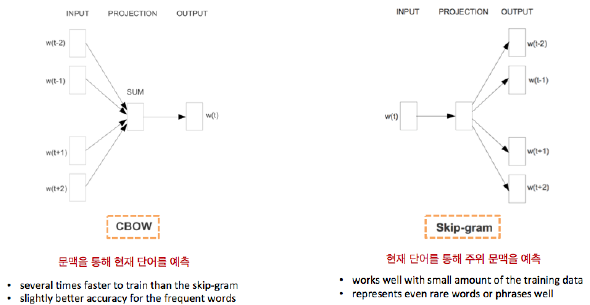 - Characteristics
- Places similar words next to each other in a vector space
- Places similar relations in parallel (preserve linguistic regularities)
- ex: France: Paris = Germany: Berlin != Italy: Madrid
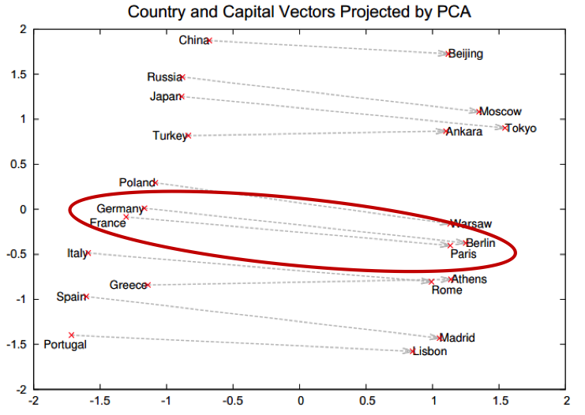
- ex: France: Paris = Germany: Berlin != Italy: Madrid
- Linguistic regularities
- v(KING) – v(MAN) + v(WOMAN) = v(QUEEN)
- v(KINGS) – v(KING) + v(QUEEN) = v(QUEENS)
- v(MADRID) – v(SPAIN) + v(FRANCE) = v(PARIS)
- 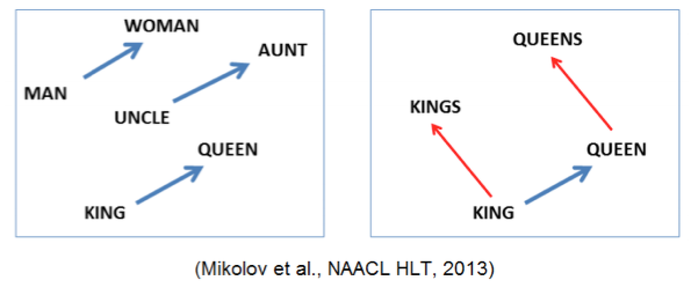
- Applications
- Machine translation (Socher et al., 2013)
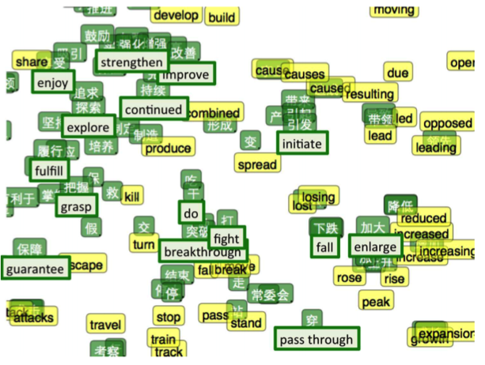 - Jointly embedding images and text (Frome et al., 2013, link)
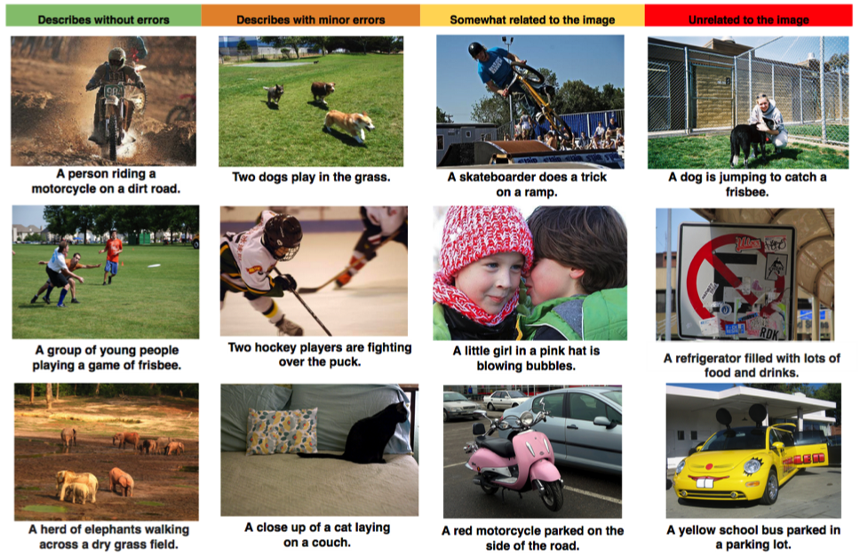
- Machine translation (Socher et al., 2013)
- Some good references to begin with in case you are interested:
- http://radimrehurek.com/2014/02/word2vec-tutorial/
- http://www.kaggle.com/c/word2vec-nlp-tutorial/details/part-1-for-beginners-bag-of-words
Let's go for it.
word2vec toy problem
-
Load documents
-
English
from nltk.corpus import reuters docs_en = [reuters.words(i) for i in reuters.fileids()]
-
Korean
from konlpy.corpus import kobill docs_ko = [kobill.open(i).read() for i in kobill.fileids()]
-
-
Tokenize
-
English
texts_en = docs_en # because we loaded tokenized documents in step 1
-
Korean
from konlpy.tag import Twitter; t = Twitter() pos = lambda d: ['/'.join(p) for p in t.pos(d)] texts_ko = [pos(doc) for doc in docs_ko]
-
-
Train
-
English
from gensim.models import word2vec wv_model_en = word2vec.Word2Vec(texts_en) wv_model_en.init_sims(replace=True) wv_model_en.save('en_word2vec.model')
-
Korean
from gensim.models import word2vec wv_model_ko = word2vec.Word2Vec(texts_ko) wv_model_ko.init_sims(replace=True) wv_model_ko.save('ko_word2vec.model')
-
-
Test
-
English
wv_model_en.most_similar('president') wv_model_en.most_similar('secretary') wv_model_en.most_similar('country')
[('chairman', 0.8655247688293457), ('vice', 0.8160154819488525), ('executive', 0.8094440698623657), ('officer', 0.7894954085350037), ('Kjell', 0.7766541838645935), ('former', 0.7680522203445435), ('chief', 0.7660256028175354), ('Robert', 0.7623487114906311), ('director', 0.7434573173522949), ('Roger', 0.7231118679046631)][('assistant', 0.8573123812675476), ('Carlos', 0.796258807182312), ('Daniel', 0.7900130748748779), ('undersecretary', 0.7888025045394897), ('representative', 0.7878221273422241), ('Deputy', 0.7847912311553955), ('NAWG', 0.7829214930534363), ('Republican', 0.7773356437683105), ('Greek', 0.7752739191055298), ('Papandreou', 0.7684933543205261)]
[('kingdom', 0.8003361225128174), ('biggest', 0.765742301940918), ('island', 0.7639101147651672), ('founding', 0.7143765687942505), ('nation', 0.7080289125442505), ('fortunes', 0.7054018974304199), ('strength', 0.6875098943710327), ('challenging', 0.6863174438476562), ('actions', 0.6835225820541382), ('departure', 0.6834459900856018)]
-
Korean
wv_model_ko.most_similar(pos('정부')) wv_model_ko.most_similar(pos('초등학교'))
[('경비/Noun', 0.9357226490974426), ('선박/Noun', 0.9204540252685547), ('연장/Noun', 0.9183653593063354), ('임무/Noun', 0.9179578423500061), ('우리/Noun', 0.9015840291976929), ('목적/Noun', 0.8871368169784546), ('기타/Noun', 0.875058650970459), ('화/Suffix', 0.8669425249099731), ('해역/Noun', 0.8575668334960938), ('한국/Noun', 0.8549510836601257)][('취학/Noun', 0.9686248898506165), ('중인/Noun', 0.9336546659469604), ('하더/Verb', 0.8985729217529297), ('정의화/Noun', 0.8843945860862732), ('김정훈/Noun', 0.8682949542999268), ('지방/Noun', 0.8677719831466675), ('조정함/Verb', 0.8617256879806519), ('44/Number', 0.8445801734924316), ('세/Noun', 0.8318654298782349), ('第/Foreign', 0.8222816586494446)]
-
word2vec in the real world
Not enough? Let's see a real life example.
- Data source: Naver News & Naver blog
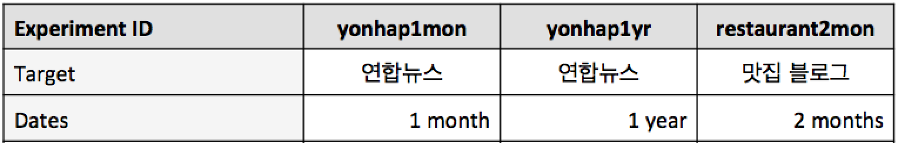 - Questions
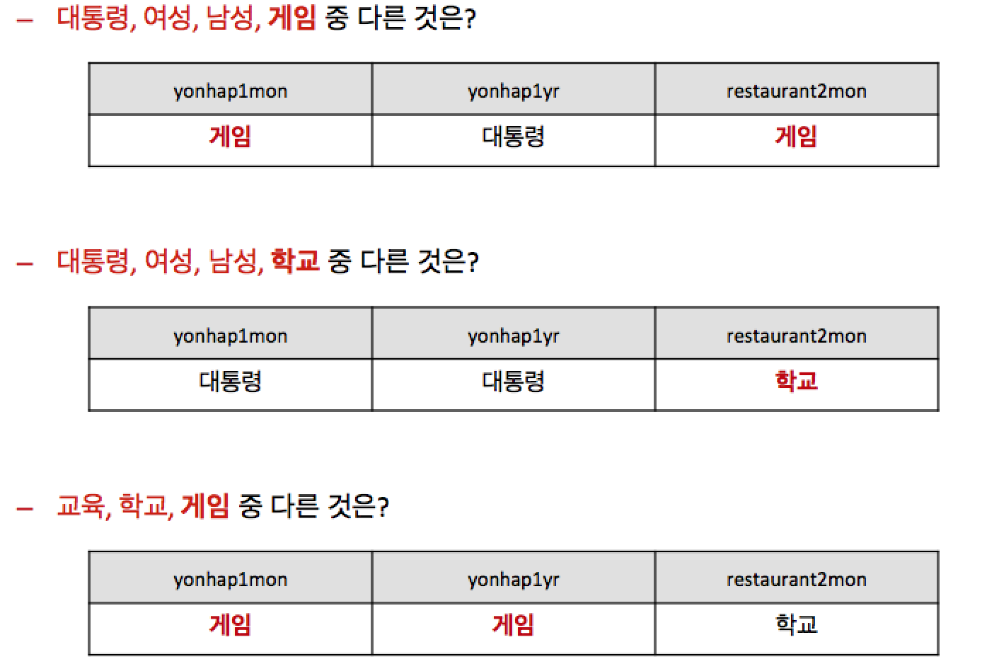 - Matching pairs: 그/Noun:남자/Noun = 그녀/Noun:?
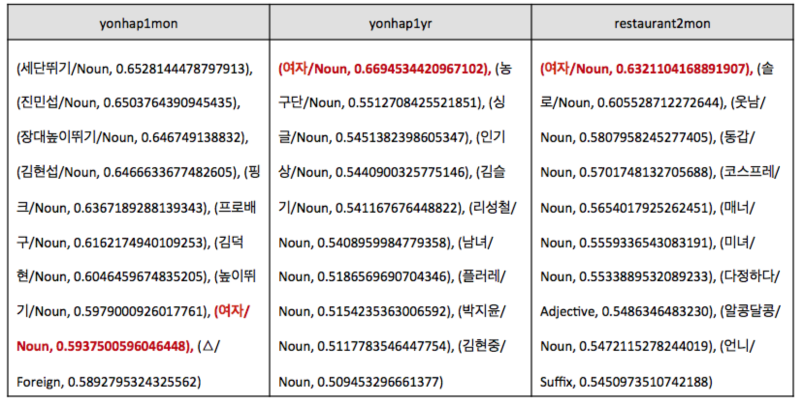 - Visualization
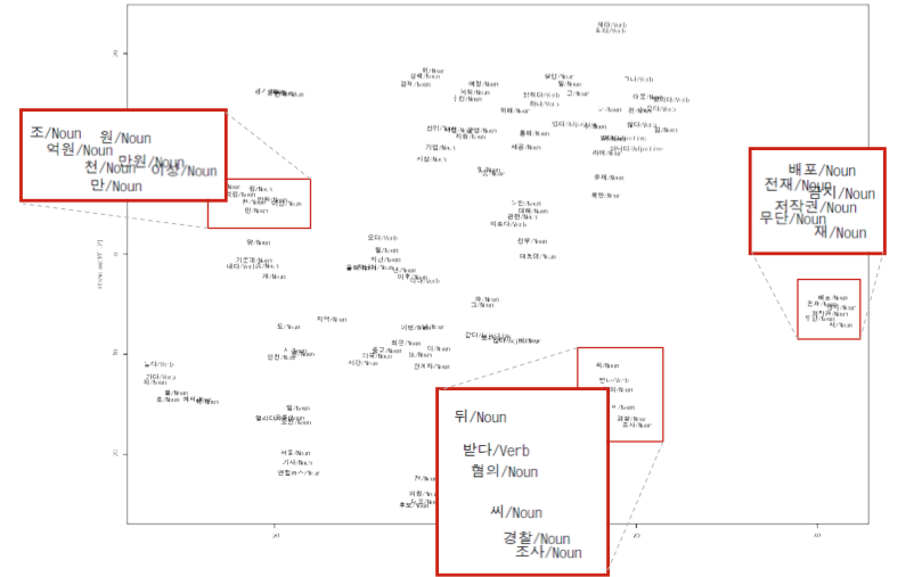
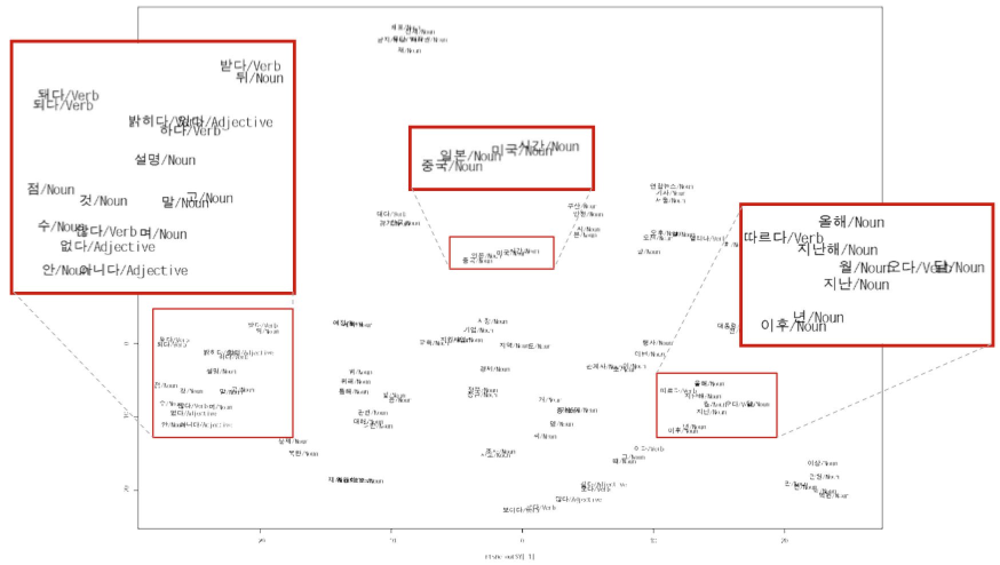
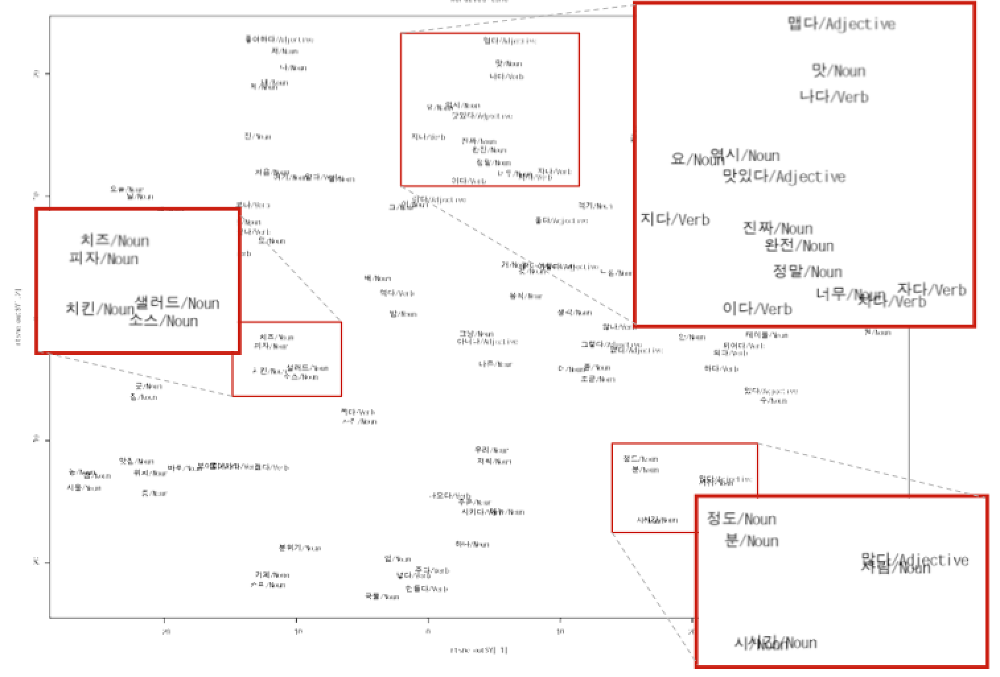